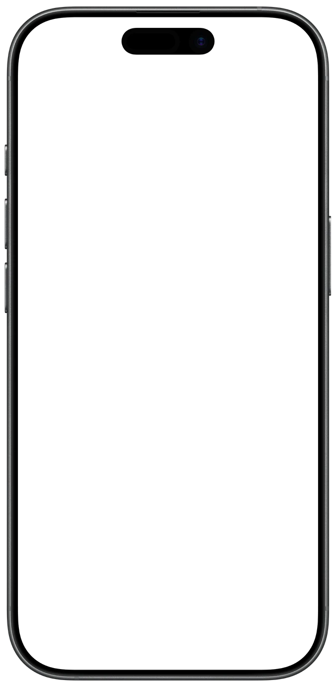

Daily Biorhythm Chart & Energy Tracker
Biotide is a daily biorhythm chart and energy tracker for iPhone and iPad. It draws your three cycles from your birth date, then checks them against how you actually feel, and finds good days for what is coming up, alone or with the people around you.
- Free to download
- No ads, no account
- Data stays on your device
- iOS 26 or later
For reflection and planning. Biorhythms are not proven science or medical advice.


What is in the app
The classic biorhythm calculator and chart, plus the part most biorhythm apps leave out: checking the curves against you.
- Daily biorhythm chart
- Physical, emotional and intellectual values for any day, worked out from your birth date. Drag the chart back or forward in time, from a week to three months at a glance.
- Your day in words
- A short reading of what to lean into and what to go easy on, with transition days, the classic “critical days”, marked before they arrive.
- Thirty-second check-in
- Rate your energy, mood, focus and last night’s sleep from 1 to 5 each evening. A gentle reminder helps, and skips the days you have already logged.
- Do the curves fit you?
- After 14 check-ins Biotide shows how often each curve matched how you felt. A curve that doesn’t fit you counts for less in your readings and plans, and can drop out entirely.
- Prime days
- Pick what is coming, from an exam or a job interview to a date, a race or an important conversation, and get the best days in the next 30, 60 or 90 days. Already have a date? See how it looks and whether a nearby day is better.
- Biorhythm compatibility
- Add people by birthday or bring them in from Contacts. See how your cycles line up as a match percentage, day by day, with the next good day to talk.
- Apple Health, with Plus
- Sleep, heart rate variability, resting heart rate and breathing rate, compared with your own usual, never with norms. Read only, and it never leaves your device.
- Widgets
- Today’s three values on the Home Screen and the Lock Screen. The small widget is free.
- Privacy
- No account, no servers, no ads and no analytics in the app. Your data stays on your device, or in your own iCloud if you turn on sync.
- Languages
- English and Ukrainian.
How it works
From your birth date to your best days, in three steps.
Check in
Your birth date draws the three curves. Each evening, rate your energy, mood, focus and sleep in about thirty seconds, and every check-in lands on the chart.
See what fits
After 14 check-ins Biotide shows how often each curve matched how you felt. Here the emotional curve matched only 57% of the time, so it counts for less.
Plan ahead
Pick an exam, an interview or an important conversation, and Biotide ranks the days ahead with the curves that fit you: here, the 15th, 17th and 19th.


What it costs
Charts, check-ins, people and planning stay free. Plus adds what the free version can’t know.
Free
$0
Everything you need to test the curves on yourself.
- Daily biorhythm chart and readings
- Daily check-in and how often each curve fits you
- People, compatibility and Prime days
- The small widget
- No ads, no account
Biotide Plus
Optional
Weekly or yearly, with a free trial on the yearly plan, or a one-time purchase.
- Sleep, heart rate variability, resting heart rate and breathing from Apple Health, against your own usual
- Each curve charted against what you logged, and your full check-in history
- Prime days tuned to how well each curve fits you and to your best weekdays
- Every widget size
Prices are set by the App Store and shown in your currency before you buy. Subscriptions renew until you cancel them in your Apple Account settings.
The app, screen by screen
Real screens from the app, with sample data: today, the check-in, Insights, Prime days, a compatibility view and People.


Stated plainly
Biorhythm theory, popular since the 1970s, says three cycles start on the day you were born: physical over 23 days, emotional over 28 and intellectual over 33. When researchers compared the curves with accidents, sports results, exam scores and moods, they did no better than chance, and a 1998 review of 134 studies concluded that the theory is not supported (Hines, Psychological Reports, 1998).
So Biotide treats the curves as a starting guess you can test, never as a prediction. Your own check-ins decide how much each curve counts. Apple Health signals are compared with your own usual, never with norms, and nothing is diagnosed. Biotide is for reflection and planning, not medical advice: if you feel unwell, talk to a doctor.
Biotide at a glance
- What it is
- A daily biorhythm chart and energy tracker for iPhone and iPad that tests the three cycles against how you feel, with compatibility and best days.
- Made by
- An independent developer. This is the official website.
- Where to get it
- The App Store, iPhone and iPad with iOS 26 or later. There is no Android version.
- Price
- Free to download, no ads. Biotide Plus is optional: weekly, yearly or a one-time purchase.
- Account
- None. Your data stays on your device, or in your own iCloud if you turn on sync.
- Apple Health
- Optional, with Plus. Read only: sleep, heart rate variability, resting heart rate and respiratory rate.
- Languages
- English and Ukrainian.
- The science
- Biorhythm theory is not supported by research. Biotide treats it as a guess to test against your own check-ins.
Frequently asked questions
What is a biorhythm?
A biorhythm is one of three cycles that, according to a theory popular since the 1970s, start on the day you were born: physical over 23 days, emotional over 28 days and intellectual over 33 days. Biotide works out all three from your birth date and draws them as a daily biorhythm chart.
What are critical days in a biorhythm?
Critical days are the days a cycle crosses zero, on its way from the high half to the low half or back. Biotide calls them transition days and marks them before they arrive; the theory treats them as sensitive days for that cycle.
How does biorhythm compatibility work?
Biotide compares your three cycles with another person's, worked out from both birthdays, and shows how closely they line up as a match percentage. It also shows, day by day, which days look good for the two of you, such as the next good day for an important conversation.
What does Biotide cost?
Biotide is free to download, with no ads. The chart, daily readings, check-ins, people and compatibility, Prime days and the small widget are free; Biotide Plus, an optional weekly or yearly subscription or one-time purchase, adds Apple Health signals, the full check-in history, Prime days tuned to you and every widget size.
Is my data private?
Yes. Biotide has no account, no servers and no analytics in the app: your birth date, check-ins and people stay on your device, or in your own iCloud if you turn on sync. Apple Health data is only read, never written, and never leaves the device. The privacy policy has the details.
Which devices does Biotide run on?
iPhone and iPad with iOS 26 or later, with widgets for the Home Screen and the Lock Screen. There is no Android version.
Who makes Biotide?
Biotide is an independent app, and biotide.app is its official website. Questions go to support@biotide.app.
Test the curves on yourself.
Free on the App Store for iPhone and iPad. No account, and your data stays with you.

For reflection and planning. Biorhythms are not proven science or medical advice.